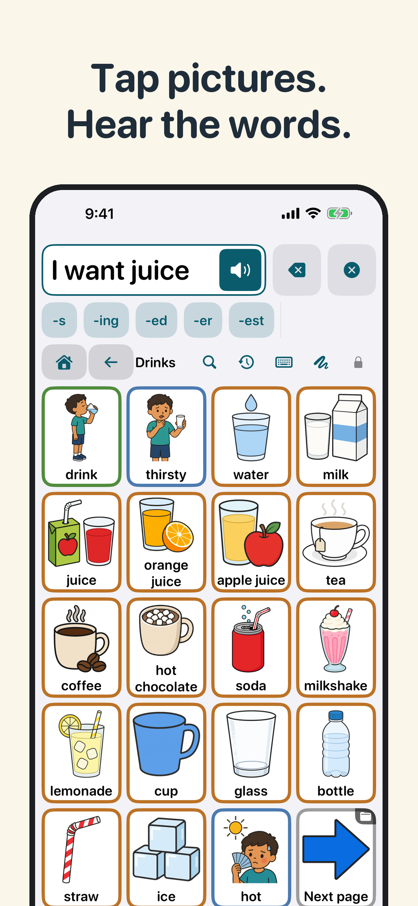
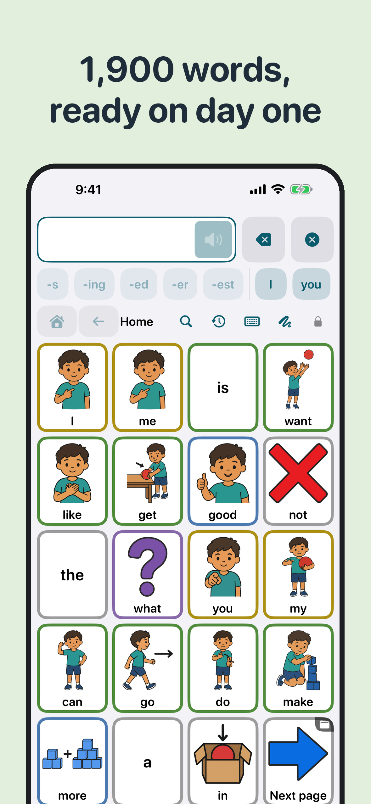
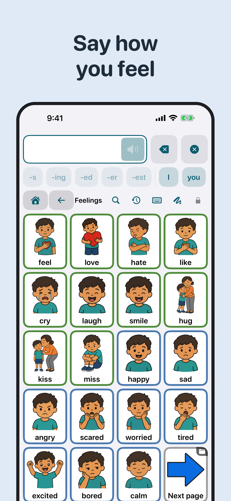
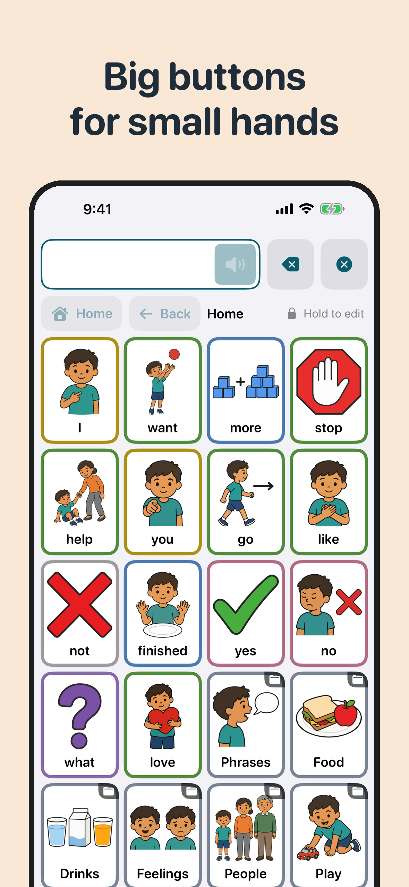
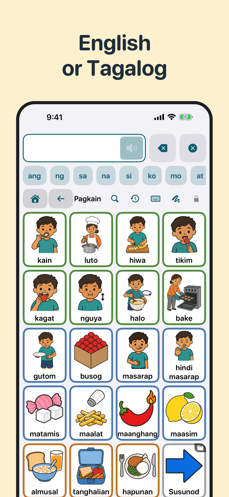
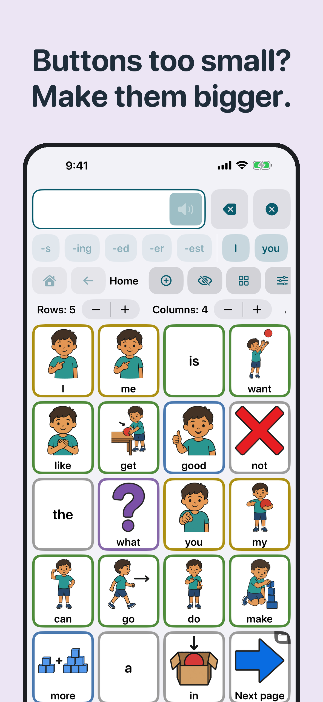
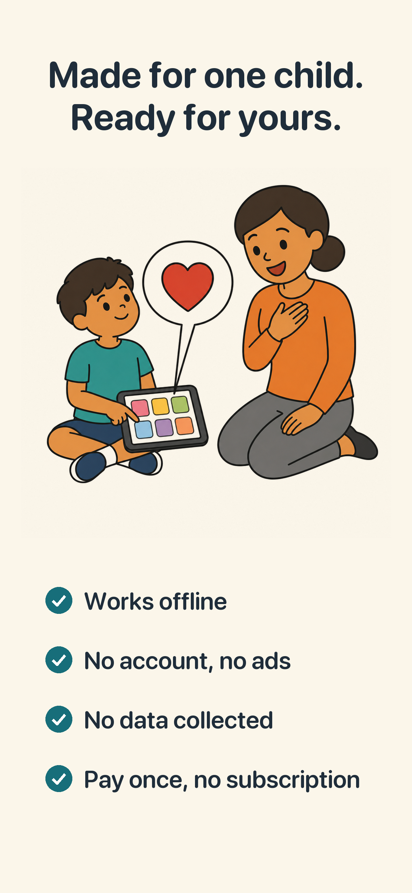

Press kit
Everything you need to write about Winzen's Talk Machine. For a free copy to try, or anything that's missing, email delafuentewince@gmail.com.
In one sentence
Winzen's Talk Machine is an AAC app for iPad and iPhone: people who can't rely on speech tap picture buttons to build a sentence, and the device says it out loud, in English or Tagalog.
Fact sheet
- What it is
- An augmentative and alternative communication (AAC) app with picture buttons and speech output
- Who it's for
- Children and adults who can't rely on speech, and the families, therapists and teachers who support them
- Made by
- Wince Dela Fuente, an independent developer. Built for Winzen, the developer's brother
- Platforms
- iPad and iPhone, iOS 17 or later. One purchase covers both
- Price
- US$19.99, one time (₱999 in the Philippines). No subscription and no in-app purchases
- Vocabulary
- About 1,900 words on 51 boards, with a picture for each drawn for this app. Three starting sizes: 20, 42 or 70 words
- Languages
- English and Tagalog. In Tagalog a row of little words (ang, ng, sa, na, si) replaces the English word endings
- Voices
- Seven recorded voices (six English, one Tagalog), every voice on the device including Personal Voice, and your own recordings
- Also has
- A keyboard with word completion, word search, a resizable grid, little-hands mode, photo scenes, switch scanning with one or two switches, an edit lock
- Privacy
- Works offline. No account, no ads, no analytics, no data collected
- Your boards
- Automatic backups, and import and export in Open Board Format (.obf and .obz)
- First released
- November 2026
- App Store
- apps.apple.com/app/id6835202531
- Website
- wience.tech/winspeak
- Credits
- The home board uses the Universal Core vocabulary from Project Core at the University of North Carolina at Chapel Hill, licensed CC BY 4.0
The story
Wince Dela Fuente built the app for Winzen, the developer's brother, with input from the people who work with him every day. It started as one child's talker and became an app anyone can buy.
It costs US$19.99 once. Most AAC apps are a monthly subscription or a one-time price in the hundreds of dollars. It also works in Tagalog, with a recorded Tagalog voice.
Questions are welcome by email.
What it isn't
It's a communication tool, not a therapy or a medical device. It doesn't diagnose or treat anything, and it doesn't replace a speech-language pathologist. There's no Android version and no free trial.
Video
Download the video (27 seconds, 1920 × 1080, MP4)
iPhone screenshots


Tap pictures

1,900 words

Feelings

Big buttons

Tagalog

Resize the grid

WhyiPad screenshots


Icon and artwork


The drawings and the pictures in the app were generated with an image model from the developer's written descriptions and checked by hand.
Contact
Wince Dela Fuente, delafuentewince@gmail.com